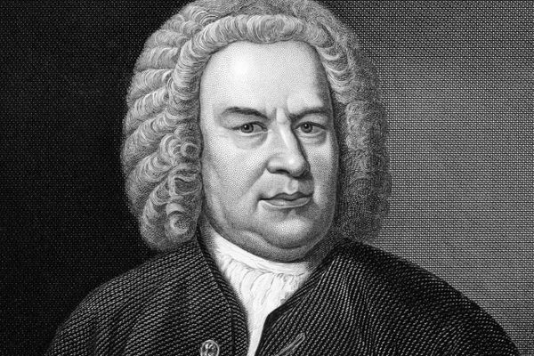

Mūzikas vēsture
Mūzika ir viena no senākajām cilvēces mākslas formām. Tās pirmsākumi meklējami akmens laikmetā, kad cilvēki izmantoja balsi, rokas plaukšķināšanu un vienkāršus sitamos instrumentus rituālos un saziņā. Mūzika bija daļa no ikdienas dzīves — medībās, darbā un reliģiskās ceremonijās.
Senā pasaule
Senajā Ēģiptē, Grieķijā un Mezopotāmijā mūzika ieņēma svarīgu vietu sabiedrībā. Ēģiptieši izmantoja arfas, flautas un bungas reliģiskos rituālos. Senajā Grieķijā mūzika bija cieši saistīta ar filozofiju — Pitagors pētīja skaņu matemātiskās attiecības, bet Platons uzskatīja mūziku par audzināšanas pamatu. Tieši grieķi izveidoja pirmos teorētiskos pamatus mūzikai kā zinātnei.
Viduslaiki un renesanse
Viduslaikos Eiropas mūziku dominēja baznīca. Gregora korāļi — vienbalsīgi dziedājumi latīņu valodā — bija galvenā mūzikas forma klosteros un katedrālēs. Ap 10. gadsimtu sāka attīstīties polifonija — vairāku balsu vienlaicīga skaņošana. Renesanses laikā (14.–17. gs.) mūzika kļuva laicīgāka, parādījās lautas, vijoles priekšteči un pirmās operas. Tika izstrādāta nošu rakstīšanas sistēma, kas ļāva saglabāt un izplatīt kompozīcijas.
Baroks un klasicisms
Baroka laikmetā (17.–18. gs.) mūzika kļuva sarežģītāka un izteiksmīgāka. Johans Sebastians Bahs, Georgs Frīdrihs Hendelis un Antonio Vivaldi radīja darbus, kas joprojām tiek atzīti par šedevriem. Parādījās orķestris modernā izpratnē. Klasicisma periodā (18. gs.) Volfgangs Amadejs Mocarts un Jozefs Haidns izveidoja sonātes, simfonijas un koncertus — formas, kas kļuva par Eiropas mūzikas pamatu.

Johans Sebastians Bahs — baroka laikmeta simbols
Romantisms un 20. gadsimts
Romantisma laikmetā (19. gs.) mūzikā svarīga kļuva individuālā izjūta un nacionālā identitāte. Ludvigs van Bēthovens, Frederiks Šopēns un Pjotrs Čaikovskis rakstīja emocionāli intensīvus darbus. 20. gadsimtā mūzika sadalījās daudzos virzienos — džezs, blūzs un roknrols radās Amerikā un kļuva par pasaules kultūras daļu. Elektronikas attīstība deva iespēju radīt pilnīgi jaunas skaņas, bet digitālās tehnoloģijas padarīja mūziku pieejamu ikvienam.
Mūsdienās
Mūsdienu mūzika ir ārkārtīgi daudzveidīga — pop, hiphops, elektroniskā mūzika, metāls, klasika un daudzi citi žanri pastāv līdzās. Straumēšanas platformas ļauj klausīties jebkuru mūziku jebkurā vietā. Mākslīgais intelekts sāk komponēt un producēt mūziku, taču cilvēku radošums un emocionālā dziļuma izpausme joprojām paliek mūzikas dvēsele.
Progresīvā metāla grupa